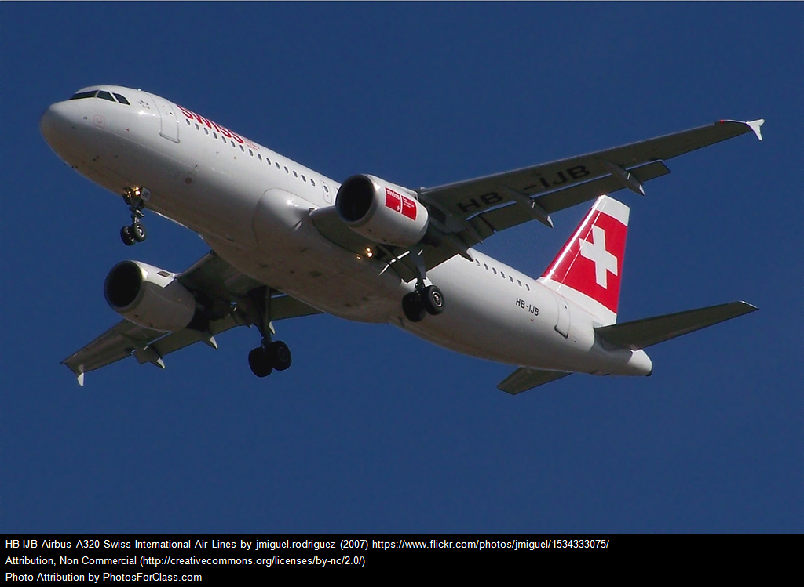

Many airlines serve the Zurich International Airport such as Swiss Air, Delta & United. To get to the city center, you can take a cab for about $60, but you can also get to the city center by taking a train. Trains run every 10-15 minutes to the Zurich ZB, the main train station, and a ticket only cost $10. A great bargain!